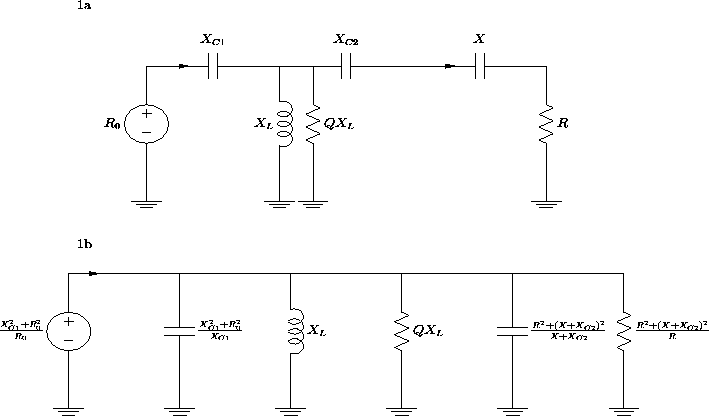
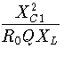
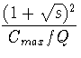
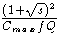

Kevin Schmidt, W9CF
6510 S. Roosevelt St.
Tempe, Arizona 85283
Figure 1a gives the schematic diagram of a typical T-network
tuner.
|  |
The input impedance will be 50 ohms if the tuner elements are selected so that the parallel equivalent output resistance in parallel with the coil loss resistance gives the parallel equivalent input resistance,
 = + , = + ,
| (1) |
| 0 = + + . | (2) |
The usual T-network has C1 , C2 , and L all variable. Since there are only two matching equations, many combinations will provide a match. The optimum combination is the one that minimizes power loss. The fractional power loss is the ratio of parallel equivalent input resistance to the the parallel coil resistance.
Notice that the parallel equivalent source and load resistances are larger than either of the original source or load resistances. In other words, any T-network will transform the load resistance to a higher value which must also be higher than 50 ohms. It then transforms this high value down to 50 ohms to produce a match. Typical examples at 80 meters would be a 10 ohm load resistance transformed to a 4000 ohm parallel equivalent which is transformed back to 50 ohms, while a 100 ohm load resistance might be transformed to 1000 ohms before being transformed back to 50 ohms. The loss mechanism is now easier to see. For these typical cases, the coil reactance will be around a few hundred ohms. The parallel equivalent coil resistance for a coil of Q=100 would be 10 or 20 thousand ohms. This resistance is enormous compared to 50 ohms and initially you might be tempted to ignore it, but it is placed across a point in the circuit where the impedance is transformed to a few thousand ohms. This means that the loss would be of order 10 percent, hardly negligible if a 1500 watt transmitter is used unless your coil is designed to dissipate 150 watts.
As discussed by Griffith, a typical T-network designed for 160 through 10 meters has compromises. One of these is that the capacitors typically have a maximum value of 200 to 300 pF. Another is that L is usually a roller inductor. Tom Rauch, W8JI, who has investigated the Q of some roller inductors tells me that a rough estimate of the Q of high quality, off the shelf, commercial roller inductors would range from a low of around 20 at low values of inductance, up to a maximum Q around 100. Custom roller inductors can have a higher Q. Since 80 and 160 meters are the lower frequency limits of these tuners, and the antennas to be tuned there are often relatively short or far from resonance, losses for these bands are important concerns. Problems also occur at the high frequency limit of these tuners with large stray reactances, component minimum values, and low coil Q. Here I will concentrate only on performance at lower frequencies.
Maximum loss occurs for low impedance loads. In figure 2, I show
a smith chart where I have plotted points joined by straight lines
to approximate contours of constant loss. The inner group of points
corresponds to a loss of 0.3 dB, the middle group 0.5 dB, and the outer
group 1.0 dB loss. Because the contours are centered toward the right hand
side of the chart which corresponds to higher impedances, lower losses
tend to occur at higher impedances and higher losses at lower impedances
for a given SWR.
| R | SWR | Loss(dB) | Loss(dB) | Loss(dB) |
| Q=50 | Q=100 | Q=200 | ||
| 1 | 50:1 | 7.47 | 4.99 | 3.08 |
| 2.5 | 20:1 | 4.62 | 2.79 | 1.57 |
| 5 | 10:1 | 3.00 | 1.69 | 0.91 |
| 10 | 5:1 | 1.85 | 1.00 | 0.52 |
| 25 | 2:1 | 0.95 | 0.49 | 0.25 |
| 50 | 1:1 | 0.62 | 0.31 | 0.15 |
| 100 | 2:1 | 0.53 | 0.26 | 0.13 |
| 250 | 5:1 | 0.43 | 0.21 | 0.10 |
| 500 | 10:1 | 0.37 | 0.18 | 0.08 |
| 1000 | 20:1 | 0.39 | 0.20 | 0.10 |
| 2500 | 50:1 | 0.61 | 0.31 | 0.15 |
Loads with significant reactance also can be matched with a T-network. In table 2, I show the worst case loss and the load that causes the maximum loss in the network for an SWR of s , calculated by a straightforward numerical search on a computer.
| R | X | SWR | Loss(dB) | Loss(dB) | Loss(dB) |
| Q=50 | Q=100 | Q=200 | |||
| 50 | 1:1 | 0.62 | 0.31 | 0.15 | |
| 26 | -7 | 2:1 | 0.97 | 0.50 | 0.25 |
| 10 | -8 | 5:1 | 1.89 | 1.02 | 0.53 |
| 5 | -8 | 10:1 | 3.05 | 1.72 | 0.93 |
| 2.5 | -8 | 20:1 | 4.69 | 2.84 | 1.60 |
| 1 | -8 | 50:1 | 7.56 | 5.06 | 3.13 |
| R | = | , | |
| X | = | , | (3) |
A comparison of tables 1 and 2 shows that while the maximum loss for a given SWR is at a slightly capacitive load, an excellent approximation to the worst case loss at a given SWR is given by calculating with a purely resistive load with
| R = . | (4) |
The usefulness of these results is that the worst case loss can be approximated simply. For typical capacitor values used and these low resistance loads, the magnitude of the capacitive reactances of C1 and C2 at 80 and 160 meters is significantly larger than either R0 or the load resistance R ; a 250 pF capacitance corresponds to roughly 175 ohms at 80 meters and 350 ohms at 160 meters. If the loss is assumed small, Eqs. 1 and 2 can be approximated by
| X 2C1 = X 2C2 = sX 2C2, | (5) |
| = - - . | (6) |
| = . | (7) |
| = . | (8) |
|
L TdB = - 10 | (9) |
|
| (10) |
| L TdB 14,000. | (11) |
| SWR | Loss(dB) | Loss(dB) | Loss(dB) |
| Q=50 | Q=100 | Q=200 | |
| 1:1 | 0.61 | 0.30 | 0.15 |
| 2:1 | 1.03 | 0.52 | 0.26 |
| 5:1 | 2.19 | 1.10 | 0.55 |
| 10:1 | 3.98 | 1.99 | 1.00 |
| 20:1 | 7.41 | 3.70 | 1.85 |
| 50:1 | 17.28 | 8.64 | 4.32 |
Eq. 11 allows us to estimate the worst possible loss that can occur with an output swr of s . The loss can be a lot smaller; for example if the swr is 5, but corresponds to a purely resistive load of 250 ohms, Eq. 11 greatly overestimates the loss. However if the swr of 5 corresponds to a purely resistive load of 10 ohms, Eq. 11 should fairly accurately predict the loss
Analytic calculations show that the least loss with a purely resistive load will occur approximately when both capacitors are set to the maximum value, and the load resistance is R = X 2C/R0 where XC is the reactance of one of the capacitors. The minimum loss with a resistive load is approximately half that of the loss for a matched load of R0 = 50 ohms if the coil Q remains the same. This result and Eq. 11 give reasonable upper and lower bounds to the loss.
Only the product of the Q value of the coil and the maximum value of the output capacitor needs to be measured or estimated to use Eq. 11. The maximum value of the capacitor is often given in the tuner specifications; if not, it can be easily measured or estimated from handbook formulas from the size, spacing, and number of plates. The coil Q can be guessed, or, for a more accurate estimate, measured using an r.f. bridge or Q meter. Alternatively, measuring the loss for a 50 ohm load and then applying Eq. 11 will give a value of QCmax at the measurement frequency. This matched loss can be measured by matching a 50 ohm dummy load with your tuner and using a power meter to measure the input and output powers. Once QCmax is known, it can be used to calculate the worst case loss at other SWR values.
Another popular tuner uses a differential T-network. In this network the capacitors C1 and C2 are ganged together so that their values sum to approximately Cmax . The worst case loss can be calculated as before and is
| L diffTdB 14,000. | (12) |
Other T type configurations can be examined. The ultimate[3]
and SPC[4] transmatches are shown in figures 3a and 3b
respectively.
| L SPCdB 14,000. | (13) |
It is amusing to compare the T-network results with those of a simple L-network designed to match a resistive low impedance load as shown in figure 3c. The result is
| L LdB = . | (14) |
The peak voltage across the output capacitor of a T-network for these loads can also be calculated within these same approximations. Since the series capacitors' reactance is significantly larger than 50 ohms, the voltage across the source can be ignored to get an estimate of the peak voltage. The peak input current is I = . The peak voltage across the input capacitor is therefore,
| V = I|XC1| = |XC1|. | (15) |
| V = . | (16) |
| V = (1 + ). | (17) |
The power loss equations can be compared to some measurements given
in Frank Witt's article[1]. The only T-network that he
measured was a Heath SA-2040 which has the ultimate transmatch
configuration. This tuner does not cover 160 meters.
The input capacitor has a maximum value of 125 pF, and the output
capacitor has a maximum value of 170 pF.
Because these values are not equal, a little care is needed.
For a 50 ohm input and output impedance, the capacitor values must
be equal. This means that the output capacitor can have a maximum
value of 125 pF for a match. However, when the output
resistance is reduced, Eq. 5 can be applied to show that
for loads below about
(125/170)250 ohms or about 27 ohms, the full
170 pF value of the output capacitor can be used. The measured
loss with a 50 ohm load at 80 meters was 13 percent which corresponds
to 0.6 dB. Converting this into a Q value using Cmax of 125 pF,
gives a Q of approximately 100, a reasonable value.
Using this Q value and a Cmax value of 170 pF in Eq. 11,
gives the calculated values at other loads
shown in table 4 along with the
measured values. The values agree within about 10 percent. This
level of agreement is partially fortuitous,
but these results show that the simple ``back
of the envelope'' calculations work.
| SWR | Measured Loss (dB) | Calculated Loss (dB) |
| 1:1 | 0.6 | 0.6 |
| 2:1 | 0.8 | 0.8 |
| 4:1 | 1.2 | 1.3 |
| 8:1 | 2.6 | 2.4 |
| 16:1 | 4.1 | 4.5 |
For convenience, I have gathered the approximate
loss and peak voltage formulas in table 5.
| Network | Loss in dB | Peak Voltage |
| Standard T |
14,000 |
|
| Differential T | 14,000 | (1 + ) |
| SPC | 14,000 |
These results point out some fundamental problems in using a 160 through 10 meter T-network tuner at 80 and especially 160 meters. Even feeding a resistive 50 ohm load with a tuner with 250 pF capacitors and a coil Q of 100 gives a loss of about 0.6 dB. With a 1500 watt transmitter, the coil will have to dissipate about 180 watts. I doubt if many tuners can stand up to that. Increasing the SWR to 3, increases the worst case loss to 1.3 dB, and the dissipation could increase to almost 400 watts. Clearly a real 1500 watt 160 meter T-network tuner needs to have significantly larger capacitors and a high quality coil in a large cabinet to minimize loss.
I would like to thank Tom Rauch, W8JI, for reading a preliminary
version of this work, for many helpful comments,
and for providing me with reasonable estimates of the Q of the
coils in these networks.